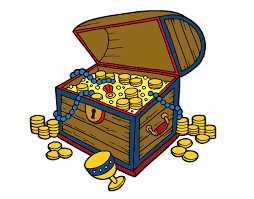

Dora e seu amigo Botas saem para mais uma aventura, seu ojetivo é encontrar um baú de tesouro.
Na procura eles se depararam com dois caminhos
Na cidade eles enfrentam chuva e muito trânsito, quando decidem perguntar para um morador da regiáo qual caminho seria mais acessível, ele então responde que é melhor pegar o metro.
Dora juntamente com Botas se perdem e decidem voltar

Dora decide que a aventura é grande demais e volta para casa, retomar seus deveres, mas sempre se pergunta o que teria encontrado.

Dora chegou no museu e encontrou um mapa antigo desse tesouro

Dora e botas conseguem encontrar o tesouro no qual está cheio de ouro e chocolate